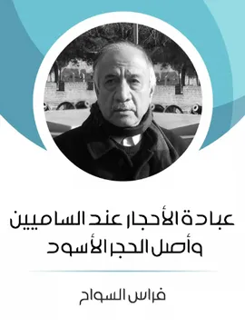

عبادة الأحجار عند الساميين وأصل الحجر الأسود

قراءة عربية أصلية محددة النطاق في الصفحات 9 إلى 14 من ملف PDF المرتبط، وليست تلخيصا كاملا للكتاب. نناقش ما تدعمه هذه المقاطع فقط.
حصاد العمر: كومة اثنين وعشرين مؤلفًا على الطاولة
يقف السواح أمام كومة مؤلفاته الاثنين والعشرين ومخطوط كتاب لم يطبع بعد، موضوعة على طاولة دار التكوين لبحث إصدارها تحت عنوان «الأعمال الكاملة»، فيتأملها كمن ينظر إلى حصاد العمر: أربعون عامًا تفصل بين كتابه الأول «مغامرة العقل الأولى» وكتابه الجديد «الله والكون والإنسان»، ومشروع ثلاث وعشرين مغامرة هو مشروعه المعرفي الخاص، تكامل تدريجيًا دون خطة مسبقة، وفي كل مغامرة كان كمن يرتاد أرضًا بكرًا غير مطروقة ويكتشف مجاهلها، وتقوده نهاية كل مغامرة إلى بداية أخرى على طريقة سندباد الليالي العربية. ويستعيد ولعًا شخصيًا بتاريخ الشرق القديم وثقافته وما أنتجته من معتقدات وأساطير وآداب وُلد في زمن لم تكن فيه هذه الأمور موضع اهتمام عام، وكيف أشعره النجاح المدوي لكتابه الأول بالمسئولية؛ إن النجاح الكبير الذي يلقاه الكتاب الأول للمؤلف يضعه في ورطة ويفرض عليه التزامات لا فكاك منها، فلم يتعجل العودة إلى الكتابة بل تابع مسيرته المعرفية حتى تكامل «لغز عشتار» في ذهنه خلال ثمانية أعوام.
زاوية وحدود القراءة
قراءة موجزة من ص ٩ إلى ص ١٤ من أصل ٣٥٢ صفحة، تعرض مقدمة طبعة الأعمال غير الكاملة؛ سيرة مشروع معرفي من «مغامرة العقل الأولى» إلى «الله والكون والإنسان»، لا الكتاب كاملًا.
الطبعة والقراءة
هذه النسخة من الكتاب صادرة ومتاحة مجانًا بموجب اتفاق قانوني بين مؤسسة هنداوي والسيد الأستاذ فراس السواح. النسخة الصوتية صادرة ومتاحة مجانًا بدعم من وفد الاتحاد الأوروبي في مصر.
تنزيل PDF المجاني ↓ القراءة والمصدر الرسمي ↗